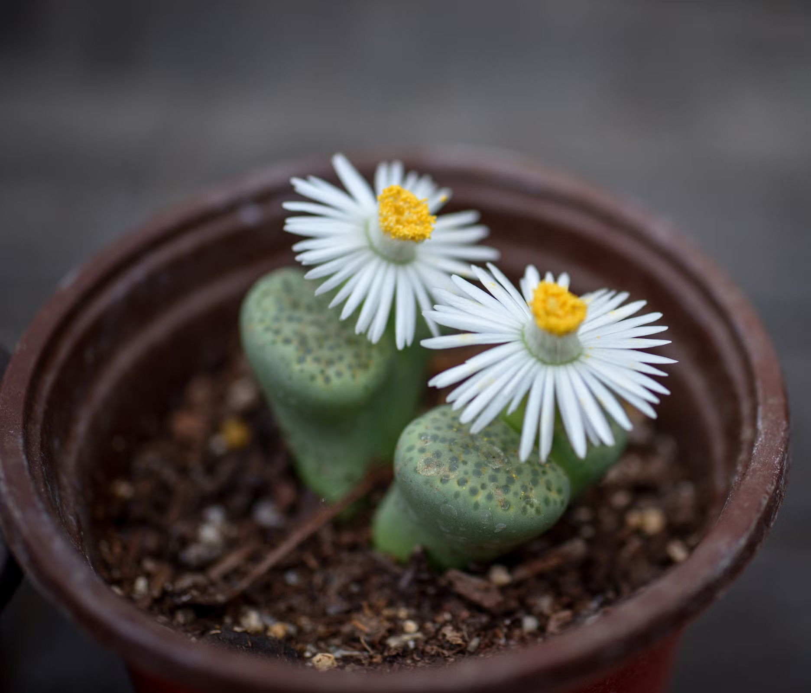
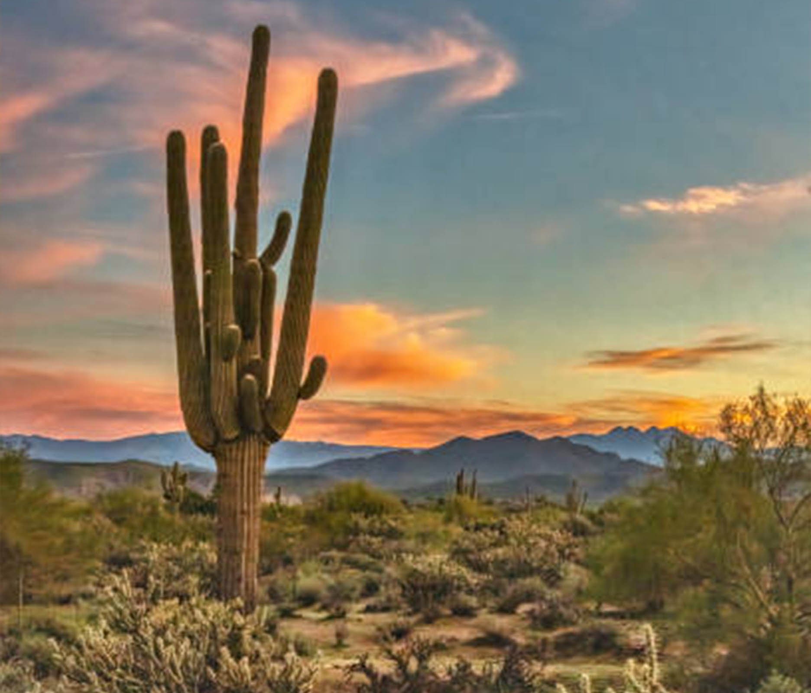
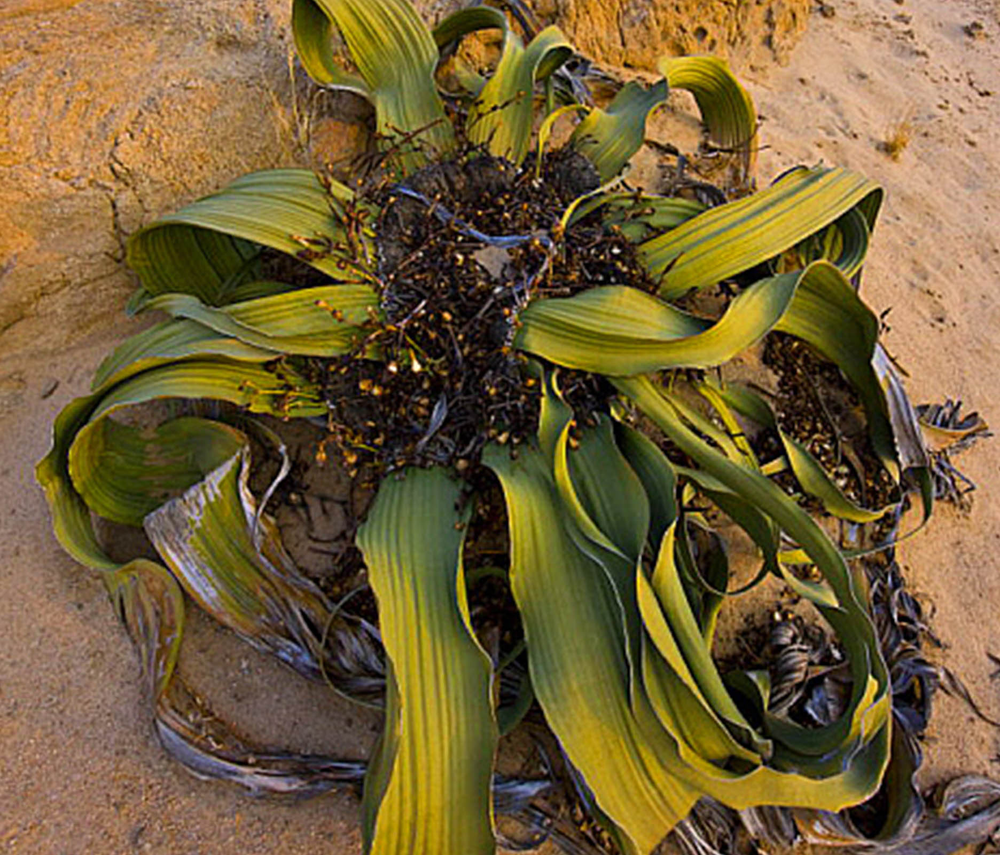
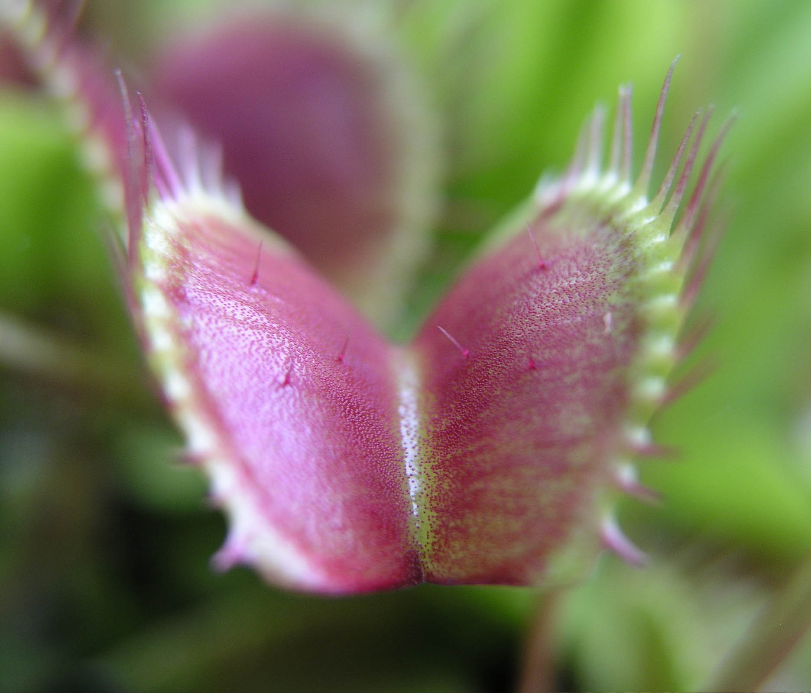
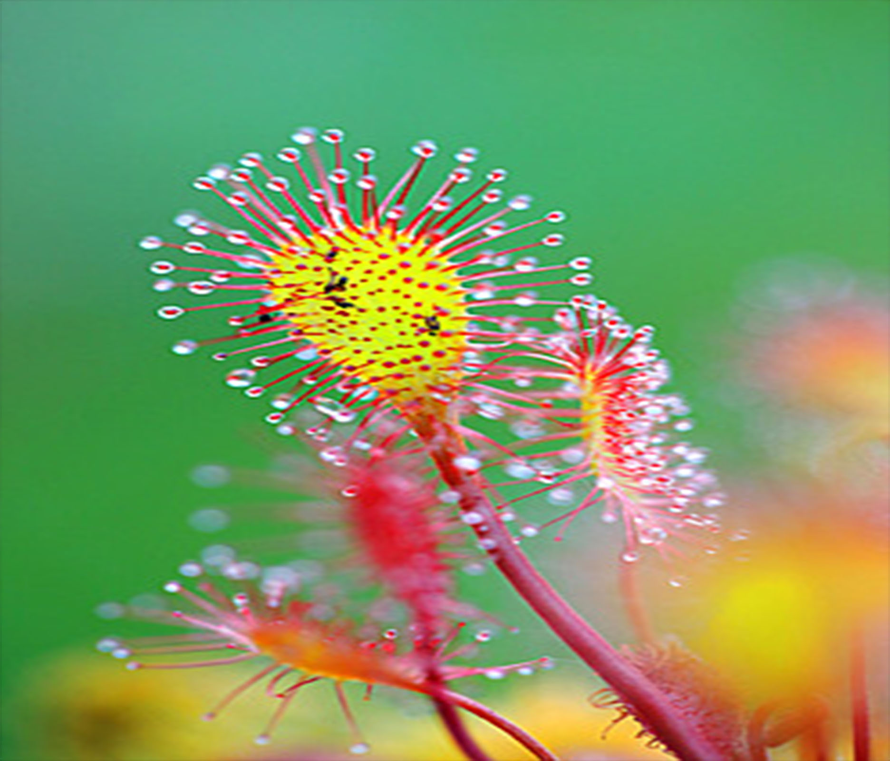
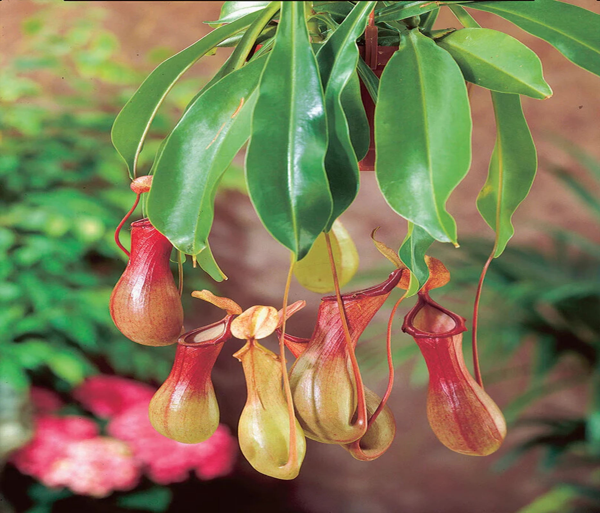
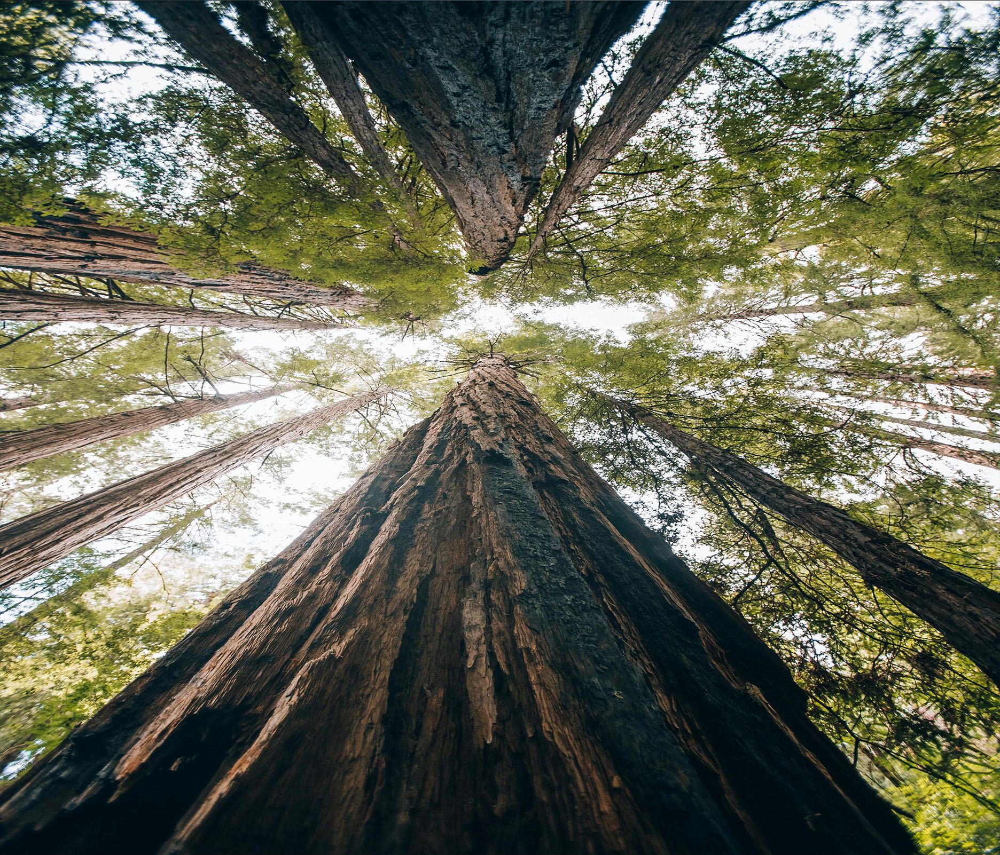
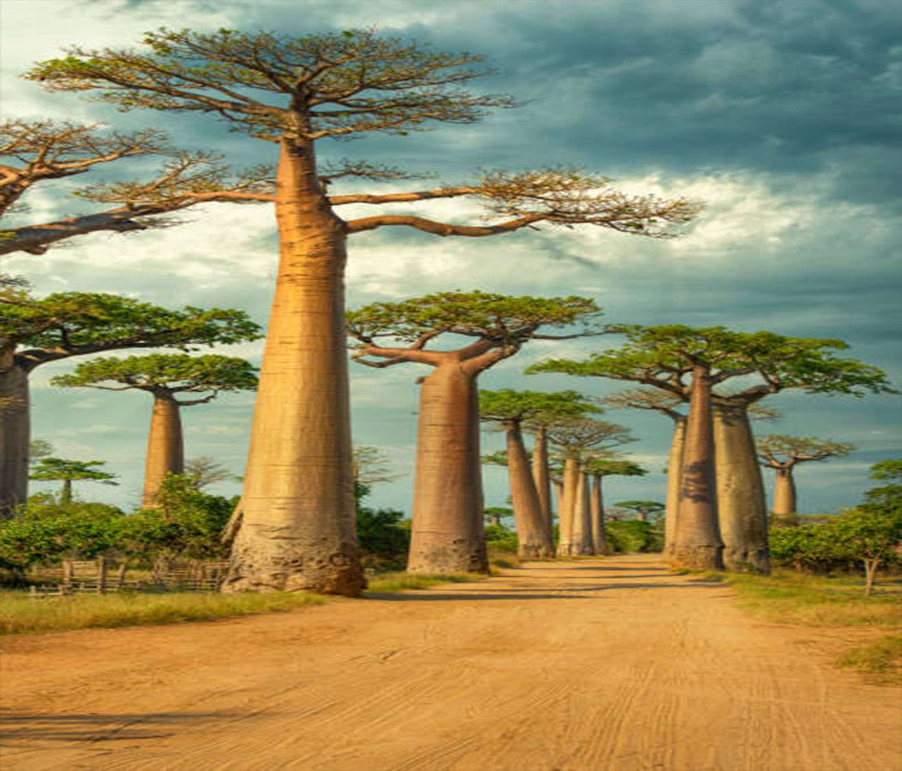
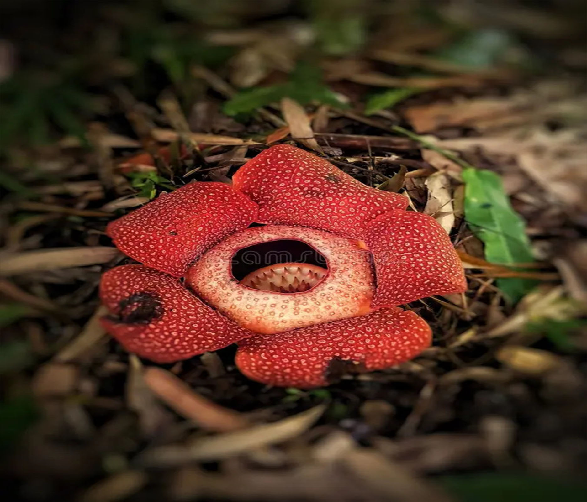

Ці дивовижні рослини — справжні шпигуни пустелі. Вони імітують форму та колір каміння навколо себе, щоб стати непомітними для голодних тварин. Увесь літопс — це два товстих листки, розділених щілиною, з якої раз на рік з'являється яскрава квітка. Вони можуть рости на розпеченому піску, де інші рослини просто згоряють.

Кактус (Сагуаро)-Це справжній символ витривалості. Сагуаро росте дуже повільно — за перші 10 років він виростає лише на кілька сантиметрів, але дорослий кактус може сягати 15 метрів у висоту. Його стовбур працює як гігантська гармошка: він розширюється, коли вбирає воду під час дощу, і стискається під час засухи, зберігаючи тисячі літрів вологи.

Вельвічія дивовижна-Ця рослина — «жива копалина», яка зустрічається лише в пустелі Наміб. У неї всього два листки, які ростуть все її життя (понад 1500 років!). Вітер розриває їх на довгі стрічки, через що рослина нагадує купу сміття або щупальця восьминога. Вона вміє пити воду прямо з повітря, вбираючи ранкові тумани своїми дивними листками.

Венерина мухоловка-Це найбільш високотехнологічна рослина-мисливець. Її пастки працюють на електричних імпульсах: коли комаха двічі торкається волосків всередині, щелепи зачиняються за частку секунди. Рослина навіть вміє «рахувати», щоб не закриватися просто так від крапель дощу, економлячи енергію для справжньої здобичі.

Росянка-Підступна красуня, листя якої всіяне сотнями яскравих війок. На кінчику кожної — крапля липкого цукрового сиропу, що блищить на сонці та приваблює жертву. Як тільки лапки комахи торкаються клею, вона прилипає намертво. Листок повільно, наче в сповільненій зйомці, згортається, щоб почати процес перетравлення.

Непентес (Рослина-глечик)-Цей хижак створює справжні пастки-лабіринти у формі яскравих глечиків. Краї глечика вкриті дуже слизьким воском, тому комаха, яка прийшла попити нектару, миттєво з'їжджає вглиб. На дні пастки знаходиться особливий сік, який розчиняє навіть міцні панцирі жуків, перетворюючи їх на поживні речовини для рослини.

Секвойя вічнозелена-Справжній хмарочос живої природи. Це найвищі дерева на Землі, що сягають понад 115 метрів. Секвойї — неймовірні довгожителі, які пам'ятають часи Римської імперії. Їхня кора містить багато танінів, що робить їх майже вогнетривкими та захищає від шкідників. Вони настільки великі, що в стовбурах загиблих дерев іноді прорубують тунелі для автомобілів!

Баобаб (Адансонія)-Африканське «дерево-аптека» та «дерево-колодязь». Його стовбур може роздуватися до 10 метрів у діаметрі, накопичуючи до 120 000 літрів води, щоб пережити засуху. В порожніх стовбурах баобабів люди іноді облаштовують кафе, магазини або навіть автобусні зупинки. Це дерево не має річних кілець, тому його вік визначають лише за допомогою спеціальних аналізів.

Раффлезія Арнольда-Рослина-паразит, яка не має ні коріння, ні стебла, ні зеленого листя. Вона живе всередині ліан, поки не прийде час випустити гігантську червону квітку вагою до 11 кілограмів. Через свій специфічний запах тухлого м'яса її називають «трупною лілією». Цей запах потрібен їй для того, щоб приваблювати лісових мух, які переносять пилок на інші квіти.
1. Літопс: Ці рослини на 90% складаються з води, але живуть у місцях, де дощу може не бути роками.
2. Кактус Сагуаро: Одне таке дерево-кактус може зберігати в собі до 750 літрів води — цього вистачило б людині на кілька місяців життя.
3. Вельвічія: Її листя ніколи не опадає, воно просто стирається об пісок на кінчиках, поки коріння росте вглиб.
4. Венерина мухоловка: Вона вміє «рахувати» час: пастка закриється лише тоді, коли комаха торкнеться волосків двічі протягом 20 секунд.
5. Росянка: Клей цієї рослини такий сильний, що вчені намагалися створити на його основі хірургічний клей для операцій.
6. Непентес: Найбільші види можуть перетравлювати навіть невеликих жаб або випадкових мишей.
7. Секвойя: Деревина секвойї не гниє і майже не горить через величезну кількість дубильних речовин.
8. Баобаб: Якщо баобаб повністю позбавити кори, він не загине, а просто виростить собі нову.
9. Раффлезія: Це єдина квітка у світі, у якої немає листя, стебла та коріння — лише величезна чаша.